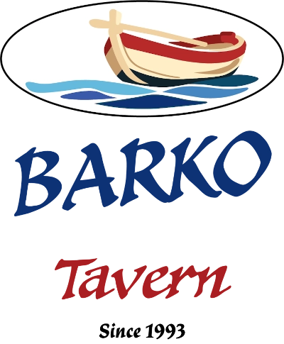

Home
Il ristorante
Menù
Galleria
Contatti
🌙
▾
Antipasti
Pane
1,20€
Pita
1,50€
Tzatziki con pita
5,50€
Taramosalata
6,00€
Fava con pomodoro secco, capperi e cipolla
7,50€
Pitarakia tradizionali di Milos
8,00€
Frittelle di zucchine con tzatziki
7,50€
Frittelle di ceci
7,00€
Melanzane fritte con salsa e formaggio
7,90€
Patatine fritte
5,50€
Saganaki (formaggio fritto)
7,00€
Feta in pasta fillo con sesamo e miele
8,50€
Dolmadakia fatti a mano
7,50€
Tigania di maiale
10,00€
Xinomyzi̱thra di Milos
7,00€
Feta con olio d’oliva e origano
5,50€
Insalate
Insalata greca
9,50€
Insalata di pomodori e cetrioli
7,00€
Insalata dell’isola con xinomyzi̱thra
10,00€
Dakos
8,50€
Insalata verde con cipollotto, fichi secchi & pesche
7,60€
Mix di verdure bollite
10,00€
Verdure selvatiche (Horta)
7,00€
Barbabietole con rucola & formaggio locale stagionato
7,50€
Fagiolini dall’occhio con skordalia
8,00€
Piatti tradizionali
Agnello al forno al limone con patate
16,80€
Capretto stifado
17,40€
Gallo al sugo con chilopites fatte a mano
14,00€
Moussaka
13,00€
Gemistà (verdure ripiene)
11,00€
Imam (melanzane)
10,00€
Skordolazana tradizionali di Milos
12,00€
Pasta al ragù (carne macinata)
10,50€
Alla griglia
Braciola di maiale
12,50€
Souvlaki di pollo
12,80€
Costolette di agnello (porzione)
15,00€
Costolette di agnello 500g
21,00€
Costolette di agnello 1Kg
42,00€
Hamburger di manzo
12,00€
Pancetta alla griglia
12,50€
Salsiccia alla griglia
11,00€
Filetto di pollo alla griglia
11,50€
Frutti di mare
Polpo alla griglia
17,00€
Calamari fritti
13,50€
Acciughe fritte
10,00€
Gamberi alla griglia
16,80€
Gamberi saganaki
15,50€
Pasta ai gamberi
18,00€
Sardine alla griglia
10,80€
Seppie al nero con riso
13,50€
Baccalà con skordalia
12,50€
Bevande & Vini / Drinks & Wine
Bibite
2,50€
Birre (varie)
da 3,90€
Ouzo / Tsipouro (bicchiere)
2,50€
Ouzo / Tsipouro 100ml
5,00€
Rakomelo 100ml
6,00€
Vino bianco – 1L
12,00€
Vino bianco – 500ml
6,00€
Vino bianco – 250ml
3,00€
Vino bianco – bicchiere
4,00€
Vino rosé – 1L
12,00€
Vino rosé – 500ml
6,00€
Vino rosé – bicchiere
4,00€
Vino rosso – 1L
13,00€
Vino rosso – 500ml
6,50€
Vino rosso – bicchiere
4,50€
Rosso amabile – 1L
14,00€
Rosso amabile – bicchiere
5,00€
Retsina – 500ml
6,50€
KYR. YIANNI – Paranga Sparkling Brut
29€
Antonopoulos Winery – Chardonnay
31€
Gerovassiliou Estate – Assyrtiko & Malagouzia
29€
Lantinis Estate – Sauvignon Blanc
20€
Konstantakis Estate – Assyrtiko (Milos)
27€
Alpha Estate – Malagouzia Single Vineyard
36€
Konstantakis Estate – Rosé di Milos
22€
Boutari Winery – Naoussa Xinomavro
27€
Aivalis Estate – Nemea Agiorgitiko
28€
Argyriou Winery – Merlot
30€
Skouras Estate – Portes Merlot
25€
Χρησιμοποιούμε cookies για στατιστικά (Google Analytics) ώστε να βελτιώνουμε το site.
Απόρριψη
Αποδοχή